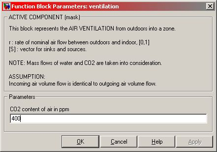

ventilation
AIV
ventilation
AIV Path: CARNOT/source/ventilation
ventilation
AIV
Path: CARNOT/source/ventilation
Purpose
Model the ventilation of a room. The model is suitable for the building models like
Room_Radiator or Room_Floor_Heating (see /Load/Houses).
Description
The block is a model for a ventilation flow rate in 3/s, flowing in
a room.
The inputs are:
Output is:
Parameters and Dialog Box

Characteristics
Direct Feedthrough Yes
Sample
time
Inherited
from driving block
Vectorized
No